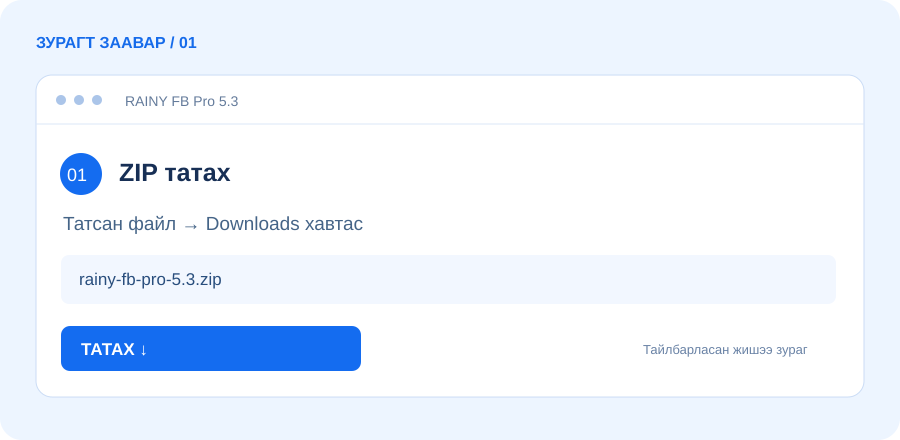

Нэг удаа бэлд. Дарааллаар нийтэл.
Текст, зураг, группийн багцаа хадгалж, нийтлэл бүрийн явцыг хяна.
Нийтлэлээ бэлд. Группээ ол. Хуваариа тохируул.
Өдөр бүрийн давтагддаг ажлаа нэг дор цэгцэл.
Цөөн товшилт. Эмх цэгцтэй ажлын урсгал.
Танд ойлгомжтой Монгол интерфэйс.
Текст, зураг, группийн багцаа хадгалж, нийтлэл бүрийн явцыг хяна.
Түлхүүр үгээр хайж, сонгосон холбоосоо группийн багцдаа нэм.
Танд харагдаж буй нийтлэлээс зар, утасны мэдээллийг шүүж CSV-ээр гарга.
Давтамж, ажиллах цаг, нэг удаагийн хуваариа тохируул.
20 минут тутам шинэ ээлж төлөвлөнө.Хуваарь ажиллах үед компьютер, Chrome нээлттэй, интернеттэй байна.
Серверийн хаяг, API түлхүүр оруулахгүй.
Татаад, задалж, Chrome-д нэмээрэй.

Доорх товчоор Chrome өргөтгөлийн ZIP файлыг татна. Файлаа Downloads хавтсаас олоорой.
Шинэ хэрэглэгчид 3 хоногийн туршилтын эрх.
30 хоногийн хэрэглээ
Багц сонгох ↗90 хоногийн хэрэглээ
Багц сонгох ↗365 хоногийн хэрэглээ
Багц сонгох ↗Facebook-д нэвтэрсэн эсэхээ шалга. Шинэчилсний дараа Facebook tab-аа refresh хийнэ. Өргөтгөлийн Нөөц → Facebook холболт шалгах товчийг ашиглаж, Явц хэсгээс алдааны тайлбарыг харна.
Нөөц хэсгээс загвар, тохиргоогоо хадгал. Шинэ ZIP-ийг задалж, өмнөх extension хавтсын файлуудыг солино. chrome://extensions дээр Reload дараад Facebook tab-аа refresh хийнэ. Өргөтгөлийг устгах шаардлагагүй.
Sidebar-ийн дээд хэсэгт дуусах он, сар, өдөр, цаг болон үлдсэн хугацаа харагдана. 5.3 хувилбар нэг Chrome профайлд дахин суулгахад өмнөх device бүртгэлийг сэргээдэг. Бүх cookie болон sync өгөгдлийг арилгавал сэргээх боломж хязгаарлагдана.
Chrome-д нэмээд 3 хоног туршаарай.